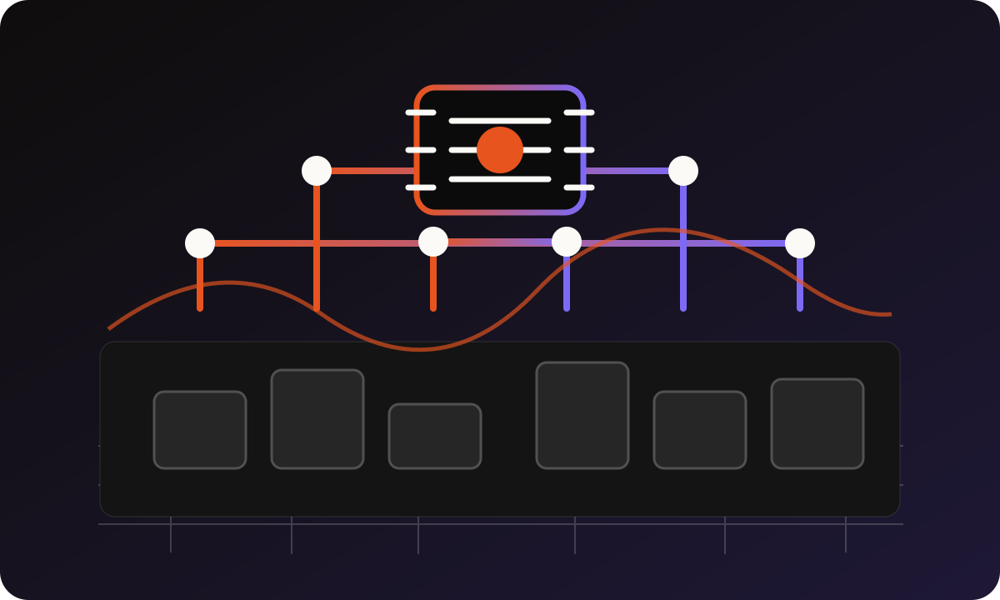

← 返回
叫 AI 來幫我 · 下午場 / 13:00–16:00
換工具，換場景，換角度
看 Manus 怎麼自動幫你做事 · 把 AI 用在生活裡 · 最後聊清楚 AI 的紅線在哪
6 小時
台中市議會 國際會議廳
2026.07.21
PM
第 3 堂 · 13:00–14:30
三工具大 PK
認識會自己做事的 AI Agent · 2026 Agent 新知 · 同一個任務，三個工具各跑一遍
TOOL MAP · 先知道工具性格
三個工具，不是誰取代誰
今天先用一句話記住差異
選工具的問題不是「哪個最強」，而是「這件事是寫作、查資料，還是跑流程」。
觀念 · 一個很好懂的比喻
副駕駛，跟代理人
微軟台灣總經理在研討會上用過的比喻
→
Agent
自己拆任務
搜尋、比較、整理、建立草稿，不只回一句話。
→
微軟 2026年5月發布的《Work Trend Index》年度報告調查了10個國家、2萬名AI使用者：企業裡的AI代理數量比去年成長了15倍 ，大型企業甚至成長18倍 ；而在「深度使用AI」的員工中，82% 表示自己做出了一年前做不到的工作成果。來源：Microsoft WorkLab 《2026 Work Trend Index Annual Report》
數字很快，但方向很清楚——AI代理正在從「新奇的功能」變成「企業裡實際在用的工具」，這不是三年後的事，是現在正在發生的事。
MANUS · AI AGENT
Manus 不只回答，
ChatGPT / Gemini：你問 → 它答 → 你自己執行它自己開瀏覽器、整理資料、寫成報告 → 你回來拿成果
還沒申請的，掃左邊 QR，午休空檔申請就好，審核需要一點時間。
⚠ 練習時只用公開資料、模擬資料——不要放民眾個資、未公開公文、內部簽呈。Agent 會把你給的資料存到雲端跑任務，機敏資訊不適合交給它。
新知 · 2026 Agent 元年
不只 Manus，大家都在做 Agent
微軟、Google、OpenAI 都在講同一件事
Microsoft
Copilot 加入 Agent 功能，自動處理 Excel/Outlook 任務
Google
Gemini 整合 Agent，能跨 App 自動完成多步驟工作
OpenAI
ChatGPT Work / GPT-5.6 支援多步驟自動任務
Manus
獨立 Agent 平台，任務導向、自動搜尋整理
工具名字會一直換，但「你下任務、AI自己跑完」這個方向，是接下來幾年的主流。
時事 · AI Agent背後需要什麼
AI 工廠：
Agent 會自己跑任務，不是因為介面變漂亮，而是背後的算力、資料、模型與工具串接都到位了。
來源：Data Center Frontier 〈Jensen Huang Maps the AI Factory Era at NVIDIA GTC 2026〉、SiliconANGLE ，2026年6月
觀念 · 劃清界線
Agent 能做什麼，不能做什麼
先劃清界線，才不會期待錯方向

A / B
A
✓ 適合交給 Agent
需要花時間、多步驟的事
需要搜尋多個來源再整合的事、重複性高的資料整理、幫你先跑一輪初步比較——這些「你自己做要花很久，但規則清楚」的任務，最適合交給 Agent。
B
✕ 不適合交給 Agent
需要你當場判斷的事
需要你當場判斷的決策、涉及機敏資料的任務、需要對外負責的最終文件——這些事讓 Agent 自己跑，風險比省下的時間更高。
連企業界都還在觀望：85%的企業已經在試辦AI代理，但只有5%信任度足以正式上線。（來源：VentureBeat，2026年4月）
Agent 不是有意識的助理，它是「照你設定的任務，自動跑步驟」的工具——方向錯了，它會跑得又快又錯。
DEMO · 同一個任務
幫民眾找一份補助申請流程
三個工具，各跑一遍給你看
①②③
①
💬 ChatGPT 的做法
你問，它根據知識回答
你問「補助申請流程是什麼」，它根據既有知識回答，語氣清楚、邏輯完整，但不會主動幫你去查最新公告或最新的申請期限。
適合：你想快速了解一個流程的大致邏輯
②
🔎 Gemini 的做法
可以順便幫你查最新資料
Gemini 可以接 Google 搜尋，回答會附上參考來源連結，適合需要「查一下最新資料」的情境——比如確認補助方案是不是還在受理期間。
適合：需要確認資訊是否為最新版本的時候
③
🟣 Manus 的做法
你下任務，它自己整理成表格
你下任務「整理這三個補助方案的申請條件比較表」，它自己搜尋、整理成一份表格，你回來直接拿去用——不用自己一個一個網頁點開比對。
簡單問答用 ChatGPT/Gemini；要花時間查資料、整理成一份東西，讓 Manus 去跑。
✏️ 換你打字 · 給自己 3 分鐘
換你比比看，ChatGPT 跟 Gemini
同一句話，兩邊都打一次
兩邊都打這句
我是台中市議會人事室的同仁，請用三個重點跟我說明[你手上正在處理的一件事]，
用一般民眾聽得懂的白話文。
感受一下：哪個回答比較清楚？哪個語氣你比較喜歡？沒有標準答案，找到自己順手的就好。
DEMO · 情境二
整理三家廠商報價比較
辦活動、採購常遇到的情境
Manus 任務範例
請幫我整理以下三家廠商的報價資料，做成一份比較表：
[貼上三份報價的重點，或口頭描述金額/項目/條件]
比較欄位：單價、總價、交期、附加條件。最後給我一個建議排序。
這種「多來源整合成一份表格」的事，正是 Agent 型 AI 最擅長的。
✏️ 換你打字 · 給自己 3–4 分鐘
換你整理一份比較表
沒有 Manus 帳號也沒關係，先用 ChatGPT / Gemini 練習
ChatGPT / Gemini / Manus · 你來打
把空格換成你的內容
請幫我把以下幾個選項整理成一份比較表：[打幾個你手上正在比較的東西，例如廠商、方案、地點]
比較欄位：[你在意的幾個條件]。最後給我一個建議排序。
已經申請到 Manus 的人可以直接用 Manus 跑跑看，感受一下「自動」和「你自己整理」的差別。
觀念 · 一個完整任務長什麼樣子
Manus 跑完一個任務
你下的任務
「整理台中市其他五個縣市議會的AI導入案例，做成一份比較報告」
它自己做的事
開瀏覽器搜尋 → 篩選相關新聞/資料 → 整理成表格 → 寫摘要 → 存成一份文件
你回來的時候，桌上已經有一份可以審閱的報告——這就是「你下任務、它跑完」的意思。
新知 · 誰已經在用
哪些政府單位已經在用 AI Agent
還是早期階段，但方向很清楚
01–02
01
案例一 · 研考 / 幕僚單位
自動彙整跨部門資料
用來自動彙整跨部門會議資料、產出定期報告初稿，省下人工蒐集、拼湊各單位資料的時間。
02
案例二 · 研究 / 政策分析單位
加快跨縣市政策研究
用來做跨縣市、跨國政策比較研究，加快前期資料蒐集的速度——原本要花好幾天蒐集的資料，現在可以先讓 Agent 跑一輪初稿。
先熟悉工具的人，之後會比較不吃力——這是今天下午想幫你們單位打的底。
道德議題 · 誰對 AI 的錯誤負責
你不是被取代，
角色正在改變，不是消失
以前的工作方式
自己查資料、自己寫、自己送出——每一步都是你親手做
未來的工作方式
告訴 AI 做什麼、審核它做得對不對、決定要不要送出——你管理的是結果，不是過程
這帶出一個核心問題：AI 做錯的時候，誰負責？答案是——你。這也是為什麼「審核」這個動作，永遠不能省略。
TAKEAWAY · 第3堂
帶走的話
工具會換，思路不換 。
下一堂：把今天學的，用在生活裡試試看。
第 4 堂 · 14:30–16:00
生活場景實戰
旅遊 · 食譜 · 親子 · 賀詞 · 預算 · 證件照，六個情境動手做 · 最後聊清楚什麼能用、什麼不能用
回顧 · 過去 → 現在 → 未來
今天已經走了一大半，複習一下
過去
AI 是查詢工具，你問、它答，你自己執行剩下所有步驟
現在（今天上午+中午學的）
AI 能生成草稿、能整合多來源、能自己跑完一個任務（Manus）
未來（正在發生）
AI 進入日常工作流程，你的角色從「自己做」變成「設定方向＋審核結果」
接下來這一堂，把這條線延伸到你的生活——AI 在家裡，也是同一套邏輯。
SCENARIOS · 挑一個，等一下自己試
AI 也能是家人的備用大腦
DEMO · 旅遊行程規劃
示範一次給你看
Prompt 範例
我們一家四口（兩大兩小，小孩6歲和9歲）要去台中玩兩天一夜。
喜歡：室內景點、不要走太多路、想吃在地小吃。
請幫我排一份行程，包含上午/下午/晚餐建議，附交通方式。
一樣是角色（一家四口）+ 格式（兩天一夜行程表）+ 背景講清楚（小孩年紀、喜好）。
✏️ 換你打字 · 給自己 3 分鐘
①換你排一趟行程
用你自己的家庭組成、想去的地方
把空格換成你的內容
我們[家庭成員組成]要去[地點]玩[天數]。
喜歡：[偏好]。
請幫我排一份行程，包含上午/下午/晚餐建議，附交通方式。
打完看結果，不滿意就追問：「太趕了，可以減少一個景點嗎」。
✏️ 換你打字 · 給自己 3 分鐘
②換你想今晚吃什麼
冰箱現在有什麼，直接打進去
把空格換成你的內容
用冰箱剩下的[食材清單]，設計三道家常菜，難度簡單，
順便列一份需要額外購買的購物清單。
沒有具體食材也沒關係，先寫「常見的家裡食材」練習一次。
✏️ 換你打字 · 給自己 3 分鐘
③換你排一個週末活動
給小孩、給自己都可以
把空格換成你的內容
週末在[地區]，適合[年齡層]的[室內/戶外]活動，
[如果有特殊需求，寫在這裡，例如天氣不好也能去、預算有限]。
沒有小孩也可以換成「適合朋友聚會」或「適合一個人放鬆」。
✏️ 換你打字 · 給自己 2–3 分鐘
④換你寫一段祝福
最快能感受到 AI 幫忙的一個
把空格換成你的內容
幫我寫一段給[對象，例如長輩/朋友/同事]的[節日]祝福文字，
語氣[要有禮貌又不生硬 / 輕鬆活潑]，[字數]以內。
打完可以直接傳給那個人看看反應——這是今天最快能實際「用出去」的一個。
✏️ 換你打字 · 給自己 3–4 分鐘
⑤換你列一份試算表
大概估算就好，不用精確
把空格換成你的內容
幫我列一份[家庭成員組成]每月基本開銷試算表，
含[食衣住行/教育/保險等項目]，用表格呈現。
五個情境都打過一輪了——挑你最喜歡的那個結果，等一下可以分享給旁邊的人看。
DEMO · ⑥ 好玩又實用
AI 也能幫你生成證件照
不用跑照相館，手機一張生活照就能改
怎麼做
用 ChatGPT 或 Gemini 的圖片功能，上傳一張清楚的生活照，請它「去背、換成正式服裝、調整成證件照規格、白色背景」
要注意
拿來做識別證、活動小卡、大頭貼這類非正式用途最沒有爭議
⚠ 正式證件（身分證、護照、駕照）仍以申辦單位的規範為準 ——AI生成的照片不一定能直接用於正式申請，尺寸、背景、拍攝方式都可能有法規要求，真的要辦證件還是要照機關規定來，不要拿AI生成照直接送件。
回家可以試試看非正式用途——這是今天最容易讓家人朋友驚豔的一招。
新知 · 還沒示範的用法
AI 在生活裡還能做什麼
同一套邏輯，換到任何生活情境都能用
01–03
01
💊 健康提醒
幫長輩整理用藥時間表
「幫我整理長輩每天要吃的藥，做成一張時間表」——把藥袋上的資訊拍照或打字給AI，它可以幫你排出一天的服藥時刻表，方便貼在家裡提醒。
02
📚 陪小孩學習
用孩子聽得懂的方式解釋
「用小學三年級能懂的方式解釋光合作用」——AI可以依照年齡調整解釋的難度，比自己想辦法「翻譯」課本內容快很多。
03
🏡 居家維修判斷
先問AI，再決定要不要叫師傅
「馬桶一直漏水，可能是哪裡出問題，先自己排除還是要叫水電」——AI可以幫你初步判斷問題方向，省下不必要的叫修費用，但真的複雜的還是要找專業。
同一套「角色+格式+背景講清楚」，換到任何生活情境都能用。
RECAP · 今晚回家就能用
你今晚就能用的 5 件事
快速複習今天下午學的
幫長輩整理藥袋時間表 拍照或打字給AI，排出一天服藥時刻
幫小孩解釋今天的功課 換成他聽得懂的年齡語言
排一個週末行程 套上「角色+格式+背景」公式
用冰箱剩下的食材 想三道菜順便列購物清單
寫一段不尷尬的祝福文字 給許久沒聯絡的朋友或長輩
WRAP-UP · 5 分鐘
還有時間？挑一個自己的情境
五個情境都試過了，還有時間的話換一個你自己真正想解決的事 不用跟課本一樣，你的生活情境都可以
套用「角色 + 格式 + 講清楚背景」打出你的 prompt
看 AI 回答，覺得不夠好就再追問一次 「可以再具體一點嗎」「這個太貴了，換便宜的」
帶著今天打出來的成果離開——回家就能用
TAKEAWAY · 生活場景
帶走的話
AI 是家人的備用大腦 。
最後一段：實作收尾，再聊清楚 AI 的紅線在哪。
HANDS-ON · 最後一次動手做
今天想完成的一件事
現在讓 AI 幫你做
1
挑一件事
工作的、生活的都可以，選一件你今天最想解決的
2
套公式打 prompt
角色 + 格式 + 背景講清楚
最後一段 · 先記住這頁就夠
公部門用 AI，
資料線、事實線、責任線。AI 可以幫你加速，但不能替你負責。
RISK 1 · 幻覺與假訊息
AI 會自信地說錯話
兩種你要提防的錯誤內容
A / B
A
幻覺 Hallucination
它不會告訴你「我不確定」
AI 講錯的時候，語氣跟講對的時候一樣自信，不會主動說「我不確定」。數字、日期、法規條文一定要人工核對，這是今天重複最多次的一句話，因為它真的最重要。
B
深偽 Deepfake · 真實案例
眼見不一定為憑
香港 Arup 工程顧問公司真實案例
2,560萬
員工被AI深偽視訊會議騙走的金額（美元）
來源：CNN、CNBC，2026年5月
台灣也有真實案例：AI換臉名人拍投資詐騙廣告、AI合成臉部驗證影片盜刷存款——公部門特別容易成為目標，多一個「先用其他管道核對」的習慣，比事後補救省事很多。
RISK 2 · 個資隱私與著作權
什麼不能貼給 AI
✕ 個資隱私
民眾姓名、身分證號、機敏資料不要貼進去；用「某甲」代替，處理完再填回實際內容
✕ 著作權
AI 產出不等於可以直接使用，尤其是對外發布的圖片、文案，要再確認授權與原創性
RISK 3 · 公務場合的紅線
什麼能用，什麼不能用
把界線劃清楚，用起來才安心
A / B
A
✓ 可以放心用
執行層、非最終決定的事
草稿撰寫、語氣潤飾、格式整理、公開資訊摘要、內部溝通文字——這些今天上午都已經練習過，可以放心繼續用。
B
✕ 要格外小心
機敏、最終負責的事
機敏公文全文、個案認定、法規解釋的最終依據——AI 給草稿，你做最終審核，這條線不能鬆。
AI 是你的工具，就像 Excel 一樣，不需要特別說明——但你要對最終產出的內容負責。
觀念 · 今天最重要的一句話
AI 不會取代你，會用 AI 的人 ，
這不是威脅，是今天六小時想讓你先一步準備好
留給你想一想 · 沒有標準答案
如果 AI 真的幫你省了時間，
一種答案
省下來的時間，拿去處理更多案子——單位效率提升，服務量能變大
另一種答案
省下來的時間，用在真正需要你判斷、需要溫度的個案上——量沒有變大，但每一件事做得更細
沒有標準答案，但這是今天最值得帶回去，在辦公室裡跟同事聊聊的一個問題。
CHECKLIST · 收到 AI 回覆，先問這幾個問題
如何判斷 AI 說的是不是真的
3
查太完美
聽起來剛好符合期待的答案，反而要多核對。
4
對外必審
只要要對外發布，就不能只靠 AI 的回答。
課後問卷 · 花 1 分鐘
最後，掃這個給我一點回饋
今天哪一段最有用？哪一段太快或太難？
ACTION · 回辦公室這一週
回去後，你可以試試看的三件事
挑一份這週最讓你頭痛的文件 ，丟給 AI 試試看第一版不用是最重要的，是你最不想重寫的那份
加入 Simon AI 學員社群 ，今天的投影片和提示語都在裡面之後有問題也可以在裡面問 把今天學的三個技巧（角色/格式/講清楚） 教給一位同事教別人，是你記得最牢的方式
收好備用 · 直接複製
今天最好用的 5 句話
忘記今天教的都沒關係，記住這5句就夠
「我是[身分]，要處理[背景]，請幫我寫成[格式]」
「以下是我的筆記（不整齊沒關係）：[貼上]請幫我整理成正式紀錄」
「幫我把這段內容濃縮成三個重點」
「可以再[正式/白話/具體]一點嗎」
「請幫我列成一份比較表，欄位是[你在意的條件]」
全部提示語都在 exercises.html，掃學員社群QR就能找到。
你的判斷， AI 最後的防線 。
謝謝台中市議會人事室，今天辛苦了。
季祥 Simon
1 / 1
‹
›